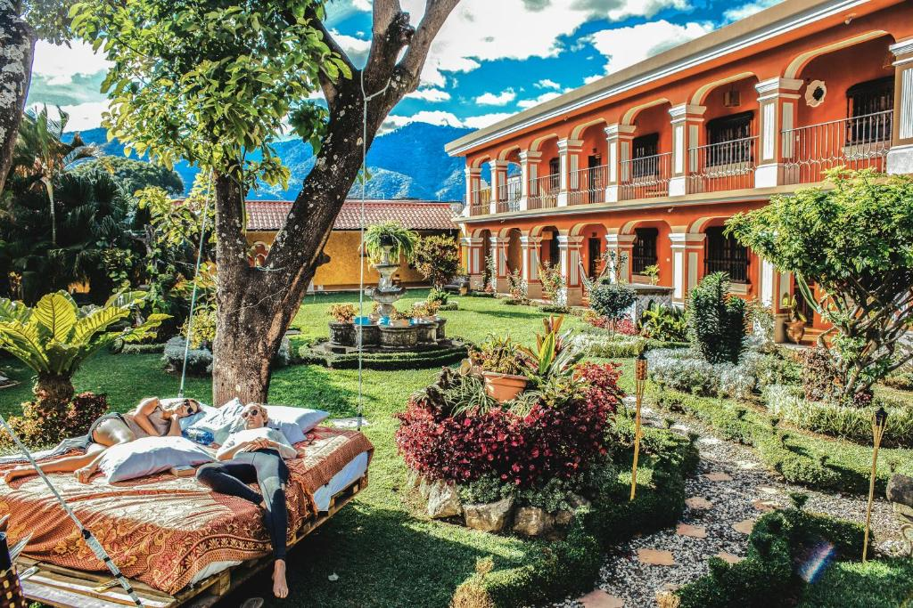
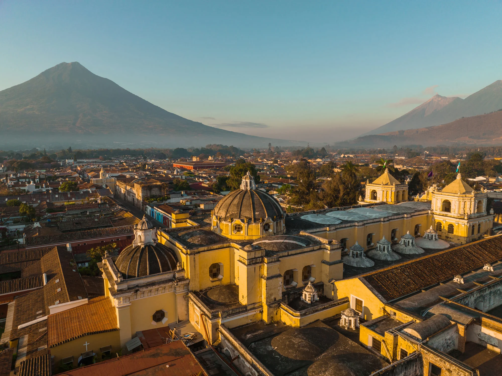
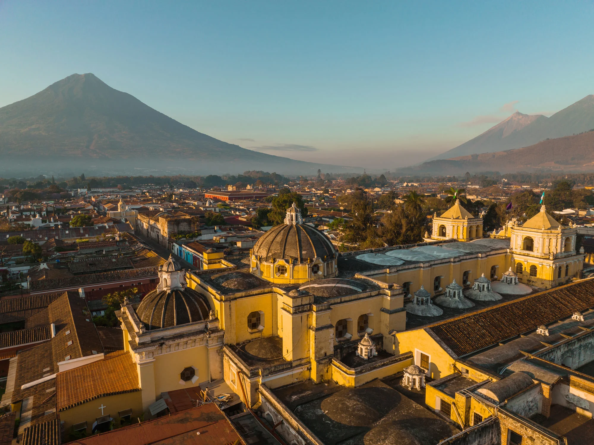
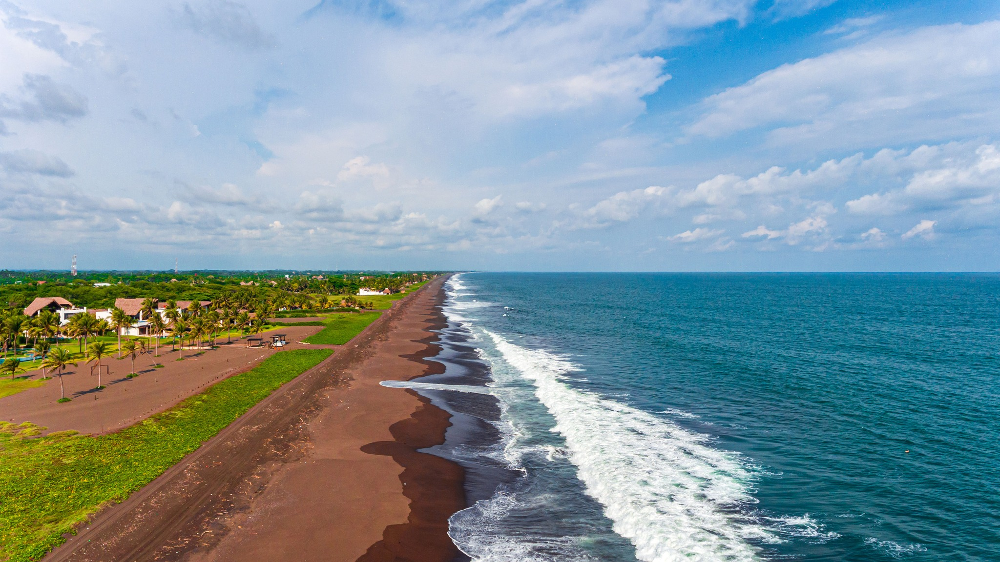
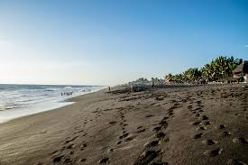
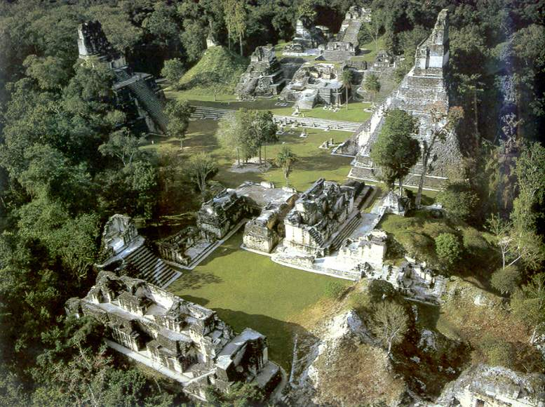
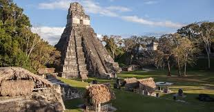
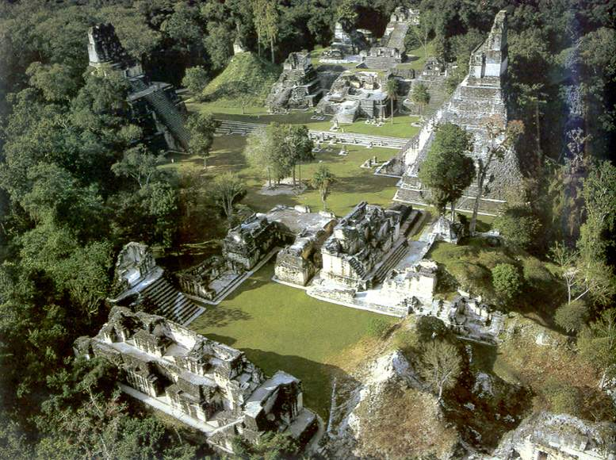
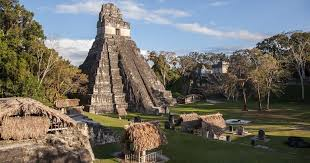

Lugares Turísticos
Antigua Guatemala
Precio: 3,500
Duración: 1 semana
Personas: 3

 

Castillo de San Felipe, Izabal
Precio: 5,000
Duración: 1 semana
Personas: 3


Monterrico, Santa Rosa
Precio: 4,000
Duración: 1 semana
Personas: 3



Tikal, Petén
Precio: 2,700
Duración: 1 semana
Personas: 3
 


